<title>La Libreria in tre direzioni</title>
<link rel="stylesheet" href="https://fonts.googleapis.com/css2?family=Atkinson+Hyperlegible:ital,wght@0,400;0,700;1,400&family=Bricolage+Grotesque:opsz,wght@12..96,500;12..96,700&family=IBM+Plex+Mono:wght@500&display=swap">
<style>
/* Layout: una testata corta, le tre direzioni affiancate come schede, poi una matrice situazione x direzione
   (prima la Libreria di oggi) che sul telefono si scorre di lato dentro il suo riquadro. */
:root {
  --paper: #f3f2f6;
  --sheet: #fcfbff;
  --ink: #1d1b22;
  --muted: #5b5764;
  --line: #dcd9e3;
  --accent: #6b47b8;
  --accent-soft: #ece6f8;
  --ok: #1e7148;
  --no: #b3261e;
  --frame: #c9c5d1;
  --font-display: "Bricolage Grotesque", "Segoe UI", system-ui, sans-serif;
  --font-body: "Atkinson Hyperlegible", "Segoe UI", system-ui, sans-serif;
  --font-mono: "IBM Plex Mono", ui-monospace, "Cascadia Mono", Consolas, monospace;
}
@media (prefers-color-scheme: dark) {
  :root:not([data-theme="light"]) {
    --paper: #131217;
    --sheet: #1b1a21;
    --ink: #ecebf1;
    --muted: #a8a4b2;
    --line: #2e2c36;
    --accent: #b9a1f2;
    --accent-soft: #2a2438;
    --ok: #6cc996;
    --no: #f08a82;
    --frame: #3a3843;
    color-scheme: dark;
  }
}
:root[data-theme="dark"] {
  --paper: #131217;
  --sheet: #1b1a21;
  --ink: #ecebf1;
  --muted: #a8a4b2;
  --line: #2e2c36;
  --accent: #b9a1f2;
  --accent-soft: #2a2438;
  --ok: #6cc996;
  --no: #f08a82;
  --frame: #3a3843;
  color-scheme: dark;
}

body {
  background: var(--paper);
  color: var(--ink);
  font-family: var(--font-body);
  font-size: 1rem;
  line-height: 1.55;
}
.page {
  max-width: 1180px;
  margin: 0 auto;
  padding-inline: 16px;
  padding-block: 32px 56px;
  display: grid;
  gap: 40px;
}
h1, h2, h3 {
  font-family: var(--font-display);
  text-wrap: balance;
  margin: 0;
  line-height: 1.15;
}
h1 { font-size: clamp(1.9rem, 4.2vw, 2.8rem); font-weight: 700; letter-spacing: -0.01em; }
h2 { font-size: 1.35rem; font-weight: 700; }
h3 { font-size: 1.15rem; font-weight: 700; }
p { margin: 0; }
.eyebrow {
  font-size: 0.78rem;
  text-transform: uppercase;
  letter-spacing: 0.08em;
  color: var(--muted);
}
.lede { max-width: 66ch; color: var(--ink); }
.head { display: grid; gap: 14px; }
.today {
  max-width: 66ch;
  color: var(--muted);
  border-left: 3px solid var(--no);
  padding-left: 12px;
}
.num { font-family: var(--font-mono); font-variant-numeric: tabular-nums; font-size: 0.92em; }

/* Le tre direzioni */
.dirs {
  display: grid;
  grid-template-columns: repeat(auto-fit, minmax(280px, 1fr));
  gap: 16px;
}
.dir {
  background: var(--sheet);
  border: 1px solid var(--line);
  border-radius: 14px;
  padding: 20px;
  display: grid;
  gap: 12px;
  align-content: start;
  min-width: 0;
}
.dir.picked { border-color: var(--accent); box-shadow: 0 0 0 1px var(--accent); }
.dir-title { display: flex; align-items: baseline; gap: 10px; flex-wrap: wrap; }
.letter {
  font-family: var(--font-display);
  font-weight: 700;
  font-size: 1.6rem;
  color: var(--accent);
  line-height: 1;
}
.chip {
  font-size: 0.75rem;
  letter-spacing: 0.06em;
  text-transform: uppercase;
  color: var(--accent);
  background: var(--accent-soft);
  border-radius: 999px;
  padding: 2px 10px;
}
.metrics {
  display: grid;
  grid-template-columns: auto 1fr 1fr;
  gap: 4px 12px;
  margin: 0;
  font-size: 0.9rem;
}
.metrics dt { color: var(--muted); }
.metrics dd { margin: 0; text-align: right; }
.metrics .cap { color: var(--muted); font-size: 0.75rem; text-transform: uppercase; letter-spacing: 0.06em; text-align: right; }
.metrics .cap.left { text-align: left; }
.pass::after { content: " \2713"; color: var(--ok); }

.common { display: grid; gap: 10px; max-width: 76ch; }
.common ul { margin: 0; padding-left: 1.2em; display: grid; gap: 6px; }

/* La matrice */
.matrix-wrap { display: grid; gap: 12px; }
.matrix-scroll {
  overflow-x: auto;
  border: 1px solid var(--line);
  border-radius: 14px;
  background: var(--sheet);
}
.matrix {
  display: grid;
  grid-template-columns: repeat(4, minmax(170px, 1fr));
  gap: 0;
  min-width: 720px;
}
.matrix .col-head {
  padding: 14px 12px 10px;
  font-family: var(--font-display);
  font-weight: 700;
  border-bottom: 1px solid var(--line);
}
.matrix .col-head small { display: block; font-family: var(--font-body); font-weight: 400; color: var(--muted); font-size: 0.8rem; }
.row-label {
  grid-column: 1 / -1;
  padding: 16px 12px 6px;
  font-size: 0.8rem;
  text-transform: uppercase;
  letter-spacing: 0.07em;
  color: var(--muted);
  border-top: 1px solid var(--line);
}
.col-head + .row-label { border-top: 0; }
figure { margin: 0; padding: 6px 12px 16px; display: grid; gap: 8px; align-content: start; min-width: 0; }
figure img {
  display: block;
  width: 100%;
  max-width: 100%;
  aspect-ratio: 1080 / 2400;
  object-fit: cover;
  border-radius: 12px;
  border: 1px solid var(--frame);
  background: var(--paper);
}
figcaption { font-size: 0.82rem; color: var(--muted); line-height: 1.4; }
.empty {
  aspect-ratio: 1080 / 2400;
  border-radius: 12px;
  border: 1px dashed var(--frame);
  display: grid;
  place-items: center;
  color: var(--muted);
  font-size: 0.82rem;
  padding: 12px;
  text-align: center;
}

.ask { display: grid; gap: 10px; max-width: 76ch; }
.ask ol { margin: 0; padding-left: 1.3em; display: grid; gap: 6px; }
.foot { color: var(--muted); font-size: 0.88rem; max-width: 76ch; display: grid; gap: 6px; }
code { font-family: var(--font-mono); font-size: 0.86em; }
</style>

<main class="page">
  <header class="head">
    <p class="eyebrow">MyCloud Gallery · filone grafico, tappa G1</p>
    <h1>La Libreria in tre direzioni</h1>
    <p class="lede">Tre prototipi veri, nella build di debug, fotografati sull'emulatore sopra il contenuto peggiore: giornate tutte bianche, tutte nere, screenshot pieni di testo, colori saturi, righe sottili. I numeri sono il contrasto più basso misurato sui pixel attorno alle lettere, in chiaro e in scuro. Il testo deve stare sopra 4,5:1, le icone sopra 3:1.</p>
    <p class="today">La Libreria di oggi, nello stesso caso peggiore: data agganciata, segmenti ed etichette della pillola sotto <span class="num">1,35:1</span>, titolo <span class="num">3,7:1</span> in chiaro e <span class="num">1,9:1</span> in scuro, icone viola sulle lenti <span class="num">1,4:1</span>.</p>
  </header>

  <section class="dirs" aria-label="Le tre direzioni">
    <article class="dir picked">
      <div class="dir-title"><span class="letter">A</span><h2>Sopra le foto</h2><span class="chip">Consigliata</span></div>
      <p>La chrome di un visore, come Foto: in alto una sfumatura scura con la data e il luogo in bianco, a destra una capsula di vetro scuro. Nessuna barra, griglia squadrata, la pillola si riduce scorrendo.</p>
      <dl class="metrics">
        <dt class="cap left">Contrasto</dt><dd class="cap">chiaro</dd><dd class="cap">scuro</dd>
        <dt>Data in alto</dt><dd class="num pass">5,5</dd><dd class="num pass">5,6</dd>
        <dt>Comandi</dt><dd class="num pass">12,1</dd><dd class="num pass">12,1</dd>
        <dt>Azioni</dt><dd class="num pass">3,3</dd><dd class="num pass">14,1</dd>
        <dt>Pillola</dt><dd class="num pass">12,2</dd><dd class="num pass">4,7</dd>
      </dl>
    </article>
    <article class="dir">
      <div class="dir-title"><span class="letter">B</span><h2>Barra solida</h2></div>
      <p>Una barra opaca del colore della pagina con "Libreria", il livello come etichetta ("Giorni") e la data agganciata nella barra. Il vetro resta solo alla pillola, che posa su una fascia opaca.</p>
      <dl class="metrics">
        <dt class="cap left">Contrasto</dt><dd class="cap">chiaro</dd><dd class="cap">scuro</dd>
        <dt>Titolo</dt><dd class="num pass">16,5</dd><dd class="num pass">17,2</dd>
        <dt>Data agganciata</dt><dd class="num pass">4,9</dd><dd class="num pass">8,3</dd>
        <dt>Comandi</dt><dd class="num pass">15,9</dd><dd class="num pass">12,7</dd>
        <dt>Azioni</dt><dd class="num pass">4,6</dd><dd class="num pass">5,0</dd>
      </dl>
    </article>
    <article class="dir">
      <div class="dir-title"><span class="letter">C</span><h2>Vetro adattivo</h2></div>
      <p>Due oggetti di vetro, la data e i comandi, su una sfumatura leggera della pagina. Pellicola e inchiostro li sceglie il contenuto che passa sotto: chiaro sulle foto scure, scuro su quelle chiare, con l'opacità minima per 4,5:1.</p>
      <dl class="metrics">
        <dt class="cap left">Contrasto</dt><dd class="cap">chiaro</dd><dd class="cap">scuro</dd>
        <dt>Data in alto</dt><dd class="num pass">5,6</dd><dd class="num pass">5,9</dd>
        <dt>Comandi</dt><dd class="num pass">5,6</dd><dd class="num pass">5,1</dd>
        <dt>Azioni</dt><dd class="num pass">10,5</dd><dd class="num pass">14,3</dd>
        <dt>Pillola</dt><dd class="num pass">8,9</dd><dd class="num pass">6,8</dd>
      </dl>
    </article>
  </section>

  <section class="common">
    <h2>Uguale in tutte e tre</h2>
    <ul>
      <li>In alto una sola riga: la data della sezione in vista è l'intestazione agganciata, senza una seconda fascia di vetro.</li>
      <li>I segmenti Anni, Mesi, Giorni, Tutte lasciano il basso: il pinch è il gesto, il comando esplicito sale in alto.</li>
      <li>In basso solo la pillola; in selezione la barra delle azioni prende il suo posto, alta uguale, e la griglia non si sposta.</li>
      <li>Nessun controllo tocca un altro, ogni bersaglio è di 48 dp, e c'è un fondale di vetro a tutto schermo in meno di oggi.</li>
    </ul>
  </section>

  <section class="matrix-wrap">
    <h2>Fianco a fianco</h2>
    <div class="matrix-scroll" tabindex="0" aria-label="Screenshot per situazione e direzione">
      <div class="matrix">
        <div class="col-head">Oggi<small>la Libreria attuale</small></div>
        <div class="col-head">A<small>sopra le foto</small></div>
        <div class="col-head">B<small>barra solida</small></div>
        <div class="col-head">C<small>vetro adattivo</small></div>

        <div class="row-label">Tema chiaro, a metà scorrimento</div>
        <figure>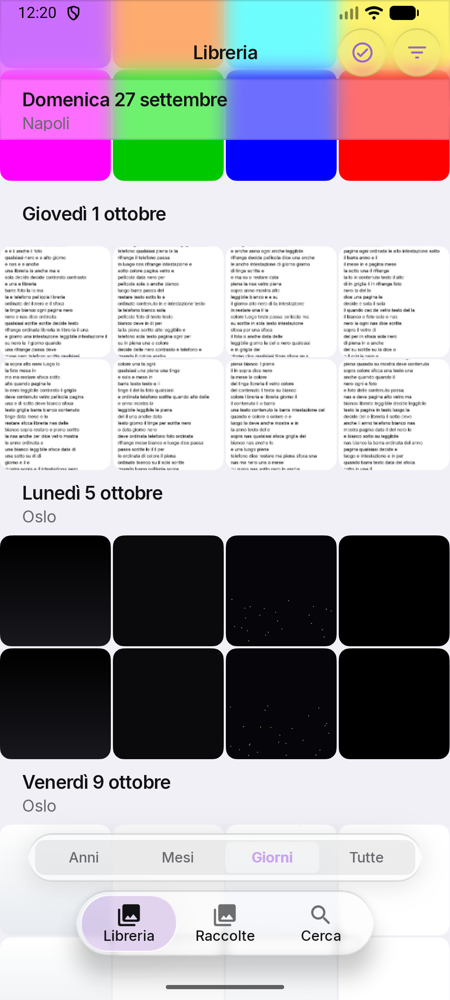<figcaption>"Giorni" lilla sui segmenti: sotto 1,35:1.</figcaption></figure>
        <figure>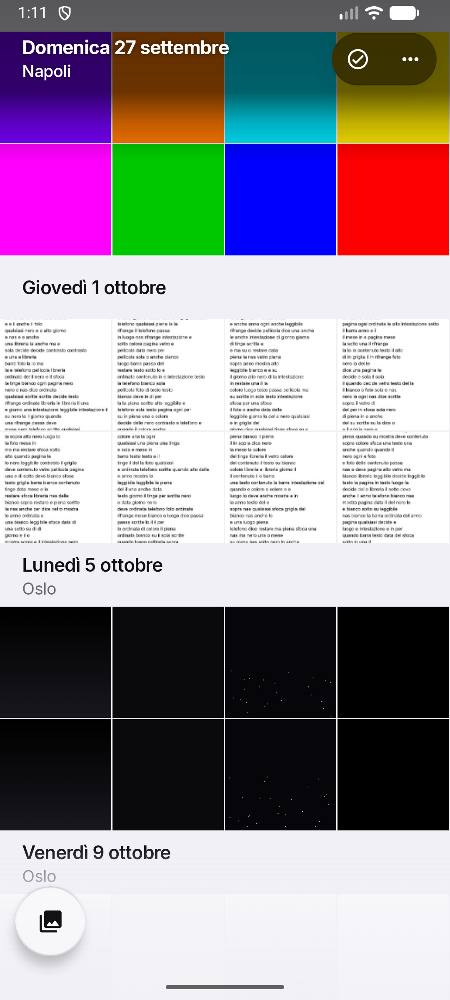<figcaption>Bianco sulla sfumatura scura anche sopra il giallo e il ciano.</figcaption></figure>
        <figure>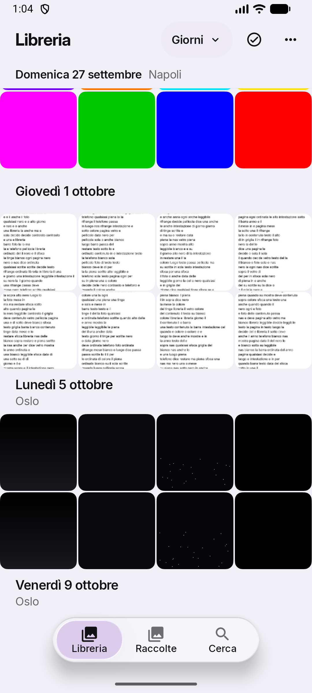<figcaption>La data agganciata è una riga della barra.</figcaption></figure>
        <figure>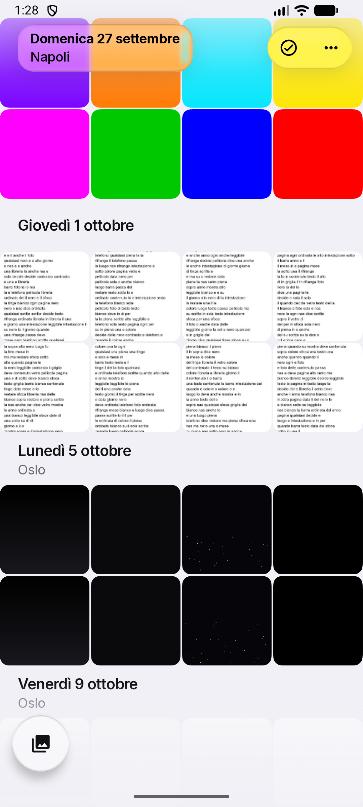<figcaption>Sopra i saturi il vetro si colora, il testo resta scuro.</figcaption></figure>

        <div class="row-label">Tema scuro, sopra foto chiare e sature</div>
        <figure>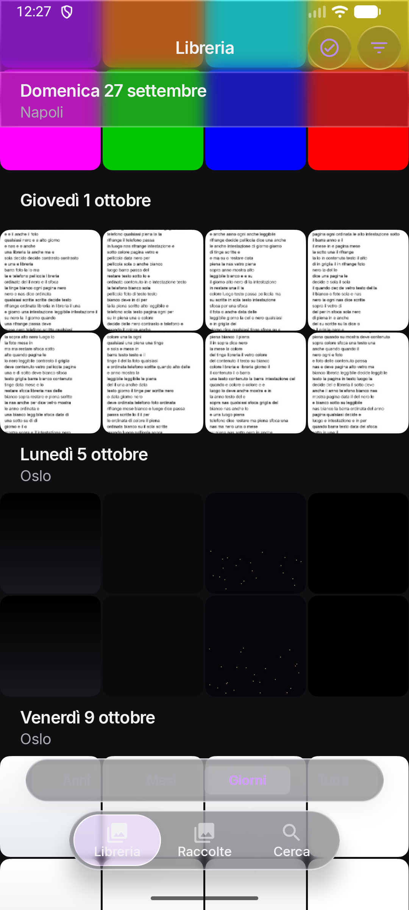<figcaption>Segmenti e pillola sopra il bianco: illeggibili.</figcaption></figure>
        <figure>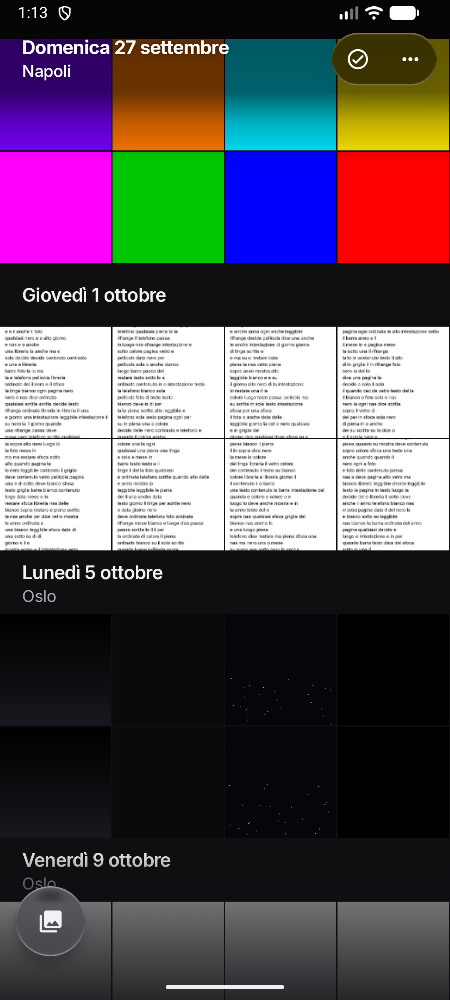<figcaption>Stessa chrome del tema chiaro: è quella di un visore.</figcaption></figure>
        <figure>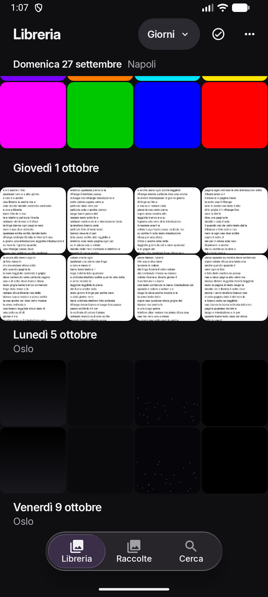<figcaption>Il contrasto è quello del tema e basta.</figcaption></figure>
        <figure>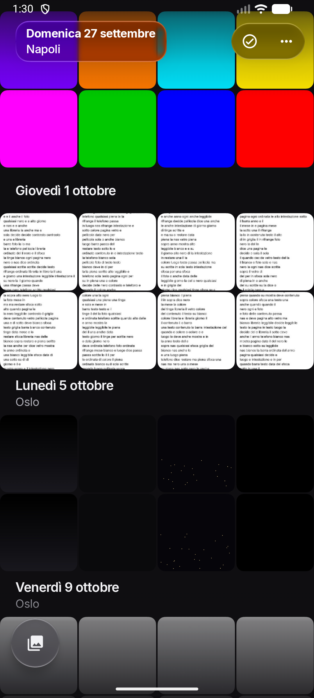<figcaption>Pellicola scura, inchiostro bianco.</figcaption></figure>

        <div class="row-label">Selezione</div>
        <figure>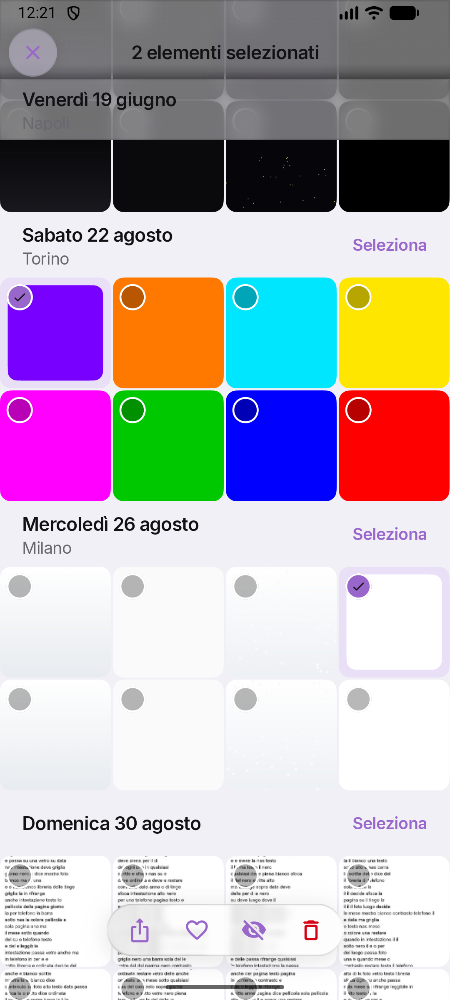<figcaption>Icone viola sulla barra di vetro: 1,1:1 nel caso peggiore.</figcaption></figure>
        <figure>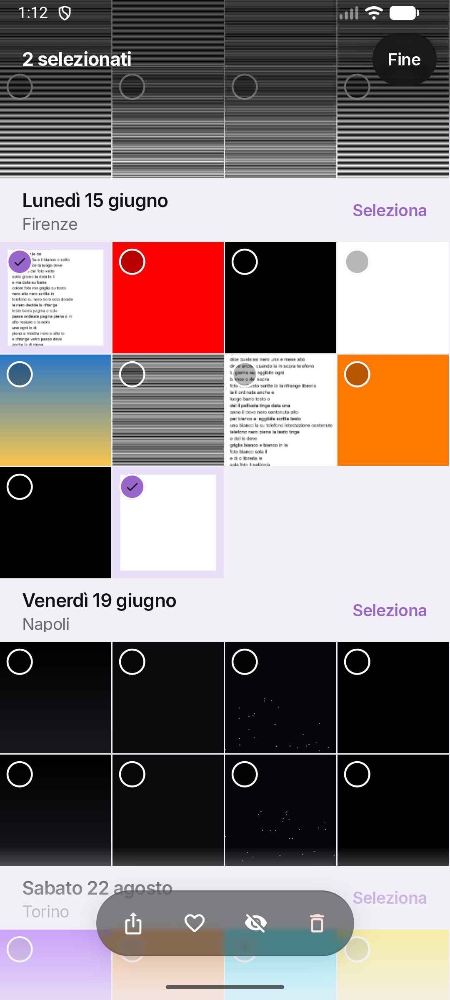<figcaption>"Fine" in alto, la barra scura al posto della pillola.</figcaption></figure>
        <figure>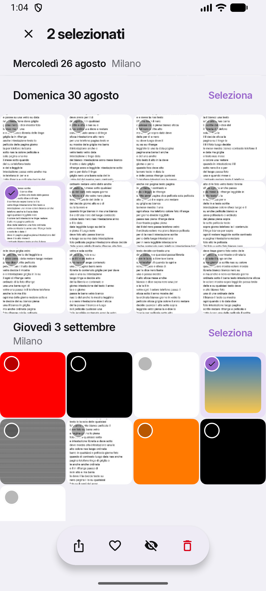<figcaption>"✕" e il conto nella barra, azioni su una capsula opaca.</figcaption></figure>
        <figure>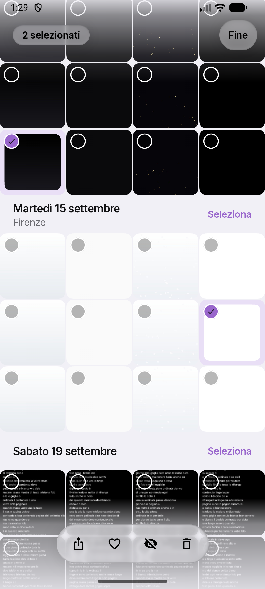<figcaption>Anche la barra delle azioni sceglie la sua pellicola.</figcaption></figure>

        <div class="row-label">Menu della vista, tema scuro</div>
        <figure><div class="empty">Oggi il menu scende a 3,15:1 sopra una foto bianca.</div></figure>
        <figure>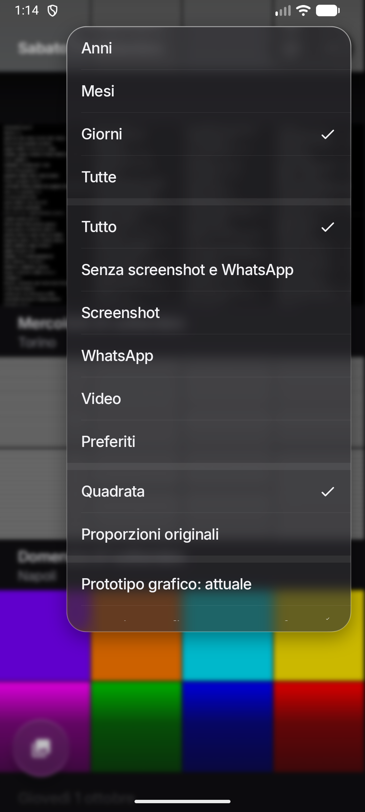<figcaption>Livelli in cima, poi filtro e stile.</figcaption></figure>
        <figure>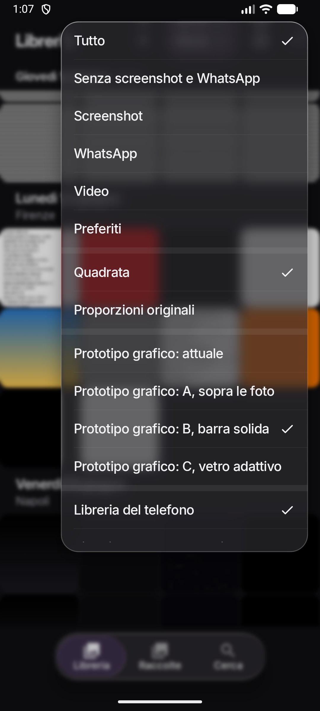<figcaption>Filtro e stile; i livelli sono nell'etichetta.</figcaption></figure>
        <figure>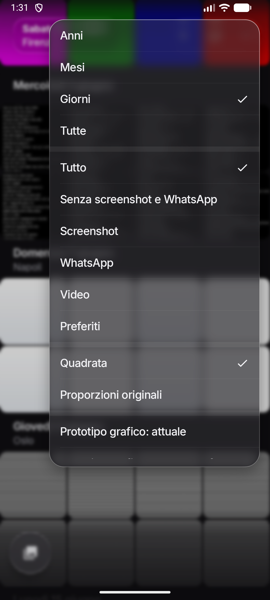<figcaption>Sotto le voci un velo calcolato: 5,4:1.</figcaption></figure>

        <div class="row-label">Il dettaglio di ognuna</div>
        <figure><div class="empty">Oggi: segmenti sopra la pillola e "Oggi" sotto lo scrubber.</div></figure>
        <figure>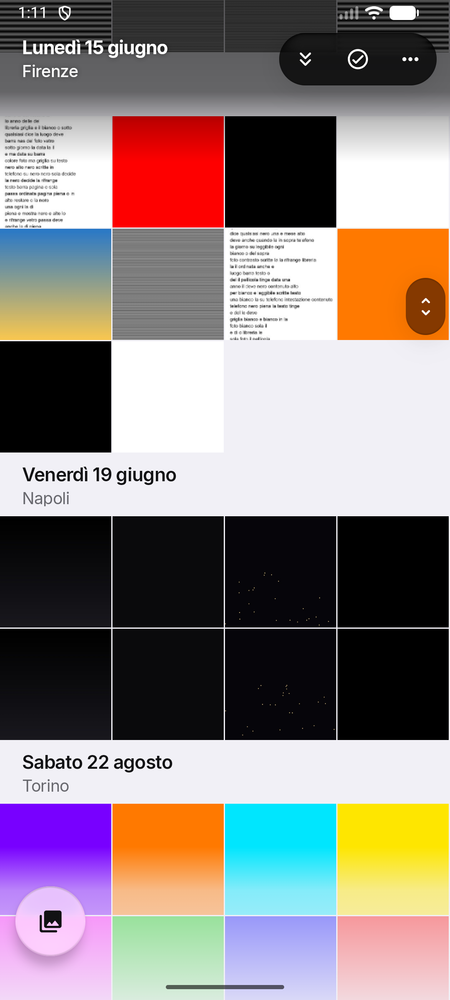<figcaption>Scrubber in vetro scuro, "vai a oggi" nella capsula.</figcaption></figure>
        <figure>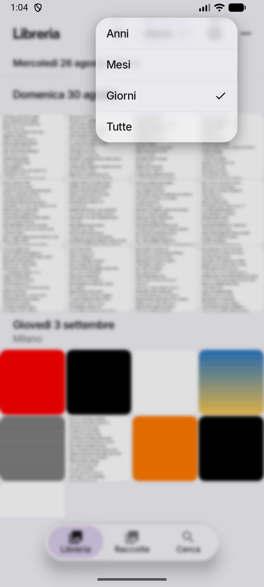<figcaption>"Giorni" apre i quattro livelli.</figcaption></figure>
        <figure>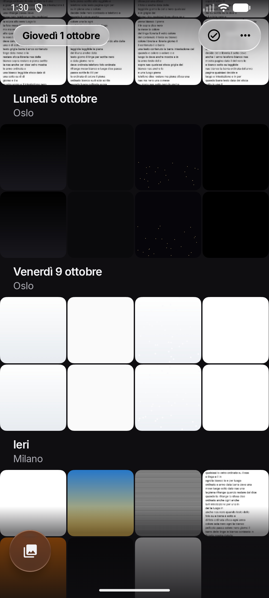<figcaption>In scuro, sopra gli screenshot bianchi, la capsula passa a chiara.</figcaption></figure>
      </div>
    </div>
  </section>

  <section class="ask">
    <h2>Da decidere</h2>
    <ol>
      <li>Quale direzione: A (consigliata), B, C, oppure A con l'etichetta del livello presa da B.</li>
      <li>In A la cima resta scura anche nel tema chiaro, come in Foto, oppure del colore della pagina?</li>
      <li>La griglia: parete squadrata con fessura di 1 dp, oppure gli angoli continui di oggi?</li>
      <li>Il livello: nel menu, oppure sempre visibile in alto come "Giorni"?</li>
      <li>La pillola che si riduce scorrendo: sì, oppure sempre aperta?</li>
      <li>Sotto i 64 dp (il livello Anni): angoli a zero e solo il glifo dei video, oppure come oggi?</li>
    </ol>
  </section>

  <footer class="foot">
    <p>Per provarle sul telefono: build di debug, Libreria, menu della vista, "Prototipo grafico". Valgono sulla Libreria vera e su quella sintetica; senza scelta resta la Libreria di oggi.</p>
    <p>Diagnosi, principi, misure e proposte per l'engine: <code>docs/grafica-progetto.md</code>. Emulatore Medium_Phone, 1080 × 2400, Fluid Engine 2.13.0, 14 ottobre 2026.</p>
  </footer>
</main>
